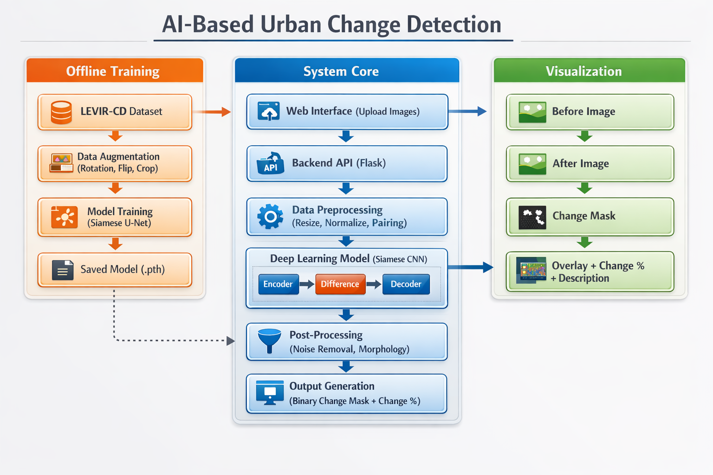
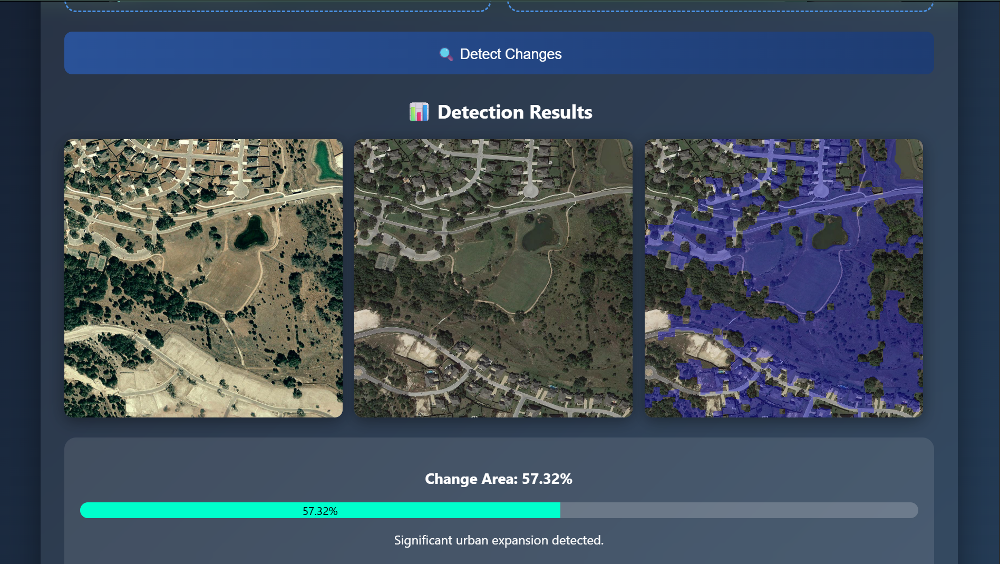

Monitoring urban changes using satellite imagery is crucial for applications such as urban planning, disaster management, and environmental analysis. However, traditional methods rely on manual interpretation, which is time-consuming, subjective, and inefficient for large-scale data. Variations in illumination, seasonal changes, and noise further complicate accurate detection. Therefore, an automated and robust deep learning–based approach is required to detect and quantify changes in multi-temporal satellite images efficiently and accurately.
To design and implement a deep learning–based change detection system using a Siamese U-Net architecture for analyzing bi-temporal satellite imagery. To accurately detect meaningful structural changes while reducing noise and handling illumination and seasonal variations through feature extraction and weighted loss optimization. To generate precise pixel-level binary change masks and compute quantitative change percentages for applications such as urban monitoring, disaster assessment, and environmental analysis.
The proposed system utilizes the LEVIR-CD dataset consisting of bi-temporal satellite image pairs with corresponding ground truth masks, where all images are resized and normalized to ensure stable training. Data augmentation techniques such as horizontal flipping and rotation are applied to improve generalization, and patch-based processing is used to efficiently handle high-resolution inputs. A Siamese U-Net architecture is employed to extract multi-temporal feature representations and compute differences to generate a probabilistic change map. The model is trained using Binary Cross-Entropy Loss with weighted optimization to handle class imbalance. The output is thresholded to generate a binary change mask, and change percentage is computed to classify changes as minimal, moderate, or major.

The proposed system performs pixel-level comparison between bi-temporal satellite images to identify structural changes. The Siamese U-Net architecture effectively captures spatial and temporal variations through feature extraction and difference computation. Post-processing techniques such as thresholding and morphological filtering reduce noise and improve detection accuracy. The model demonstrates robustness against illumination and seasonal variations. Overall, the system achieves reliable and consistent change detection with minimal false positives.
The model highlights changed regions using visual overlays and computes change percentage, providing both qualitative and quantitative insights for urban analysis.

The proposed system successfully demonstrates automated urban change detection using a Siamese U-Net architecture. By combining deep learning with image processing techniques, it provides accurate and interpretable results. The model effectively identifies pixel-level changes and quantifies them for practical analysis. This approach can be extended to real-world applications such as urban monitoring, disaster assessment, and environmental management.